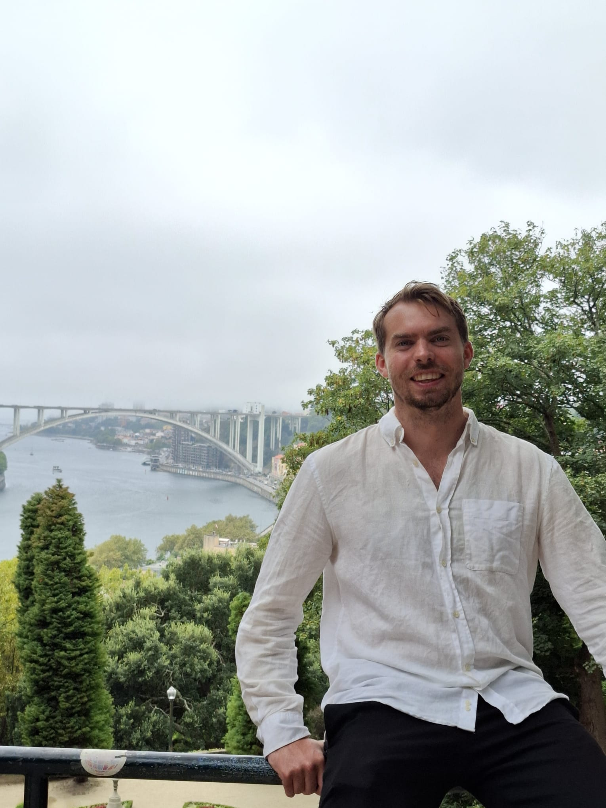

FounderOprichter
Marc van der Werf
Born and based in the Netherlands, I've built my career in tourism, working on global projects for some of the world's largest airlines and leading international ground-transportation initiatives. Alongside my professional work, sport has always been a constant in my life - from playing as a kid to exploring new cities through their local sports culture. Geboren en woonachtig in Nederland, heb ik mijn carrière opgebouwd in het toerisme, waar ik wereldwijde projecten deed voor enkele van 's werelds grootste luchtvaartmaatschappijen en internationale grondtransport-initiatieven leidde. Naast mijn werk is sport altijd een constante factor in mijn leven geweest - van zelf spelen als kind tot het ontdekken van nieuwe steden via hun lokale sportcultuur.
With a degree in Sports Marketing and a lifelong passion for exploring new cultures through sports, food, language, and local experiences, I felt inspired to create a platform that brings all these elements together. That idea grew into Beyond the Pitch. Met een opleiding Sportmarketing en een levenslange passie voor het ontdekken van nieuwe culturen via sport, eten, taal en lokale experiences, voelde ik me geïnspireerd om een platform te creëren dat al deze elementen samenbrengt. Dat idee groeide uit tot Beyond the Pitch.